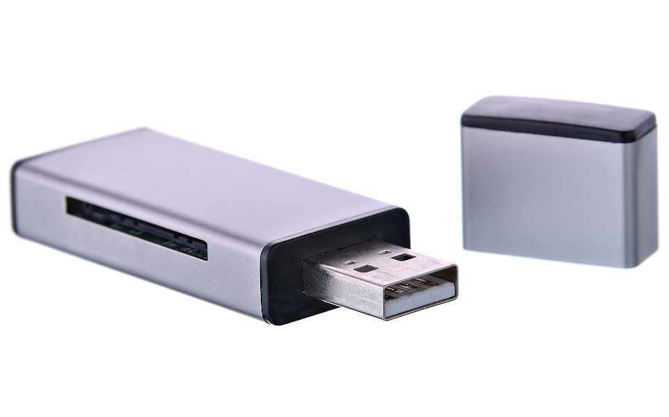
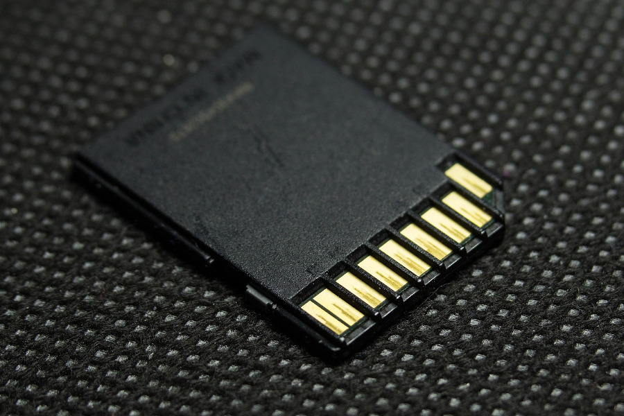
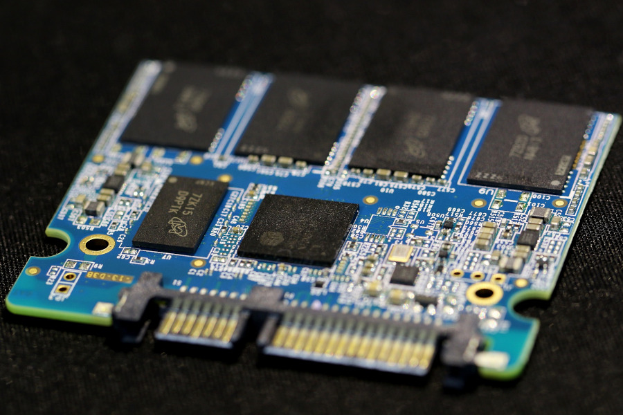
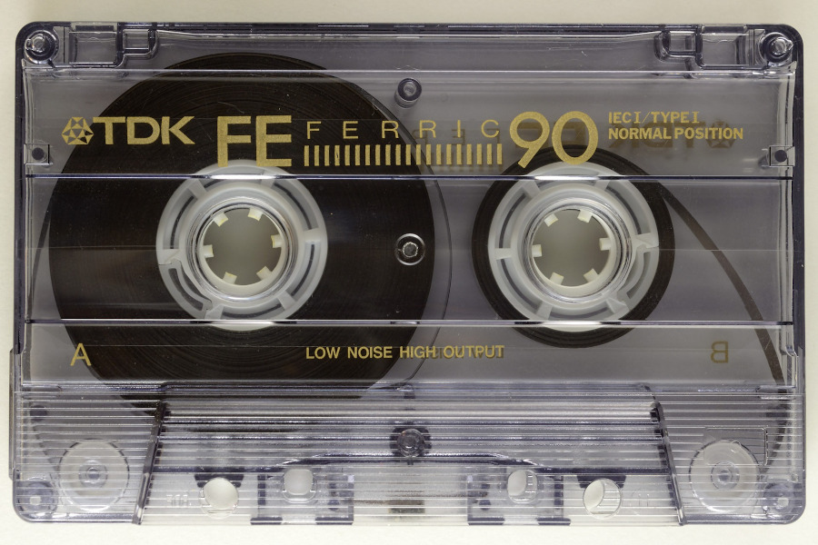
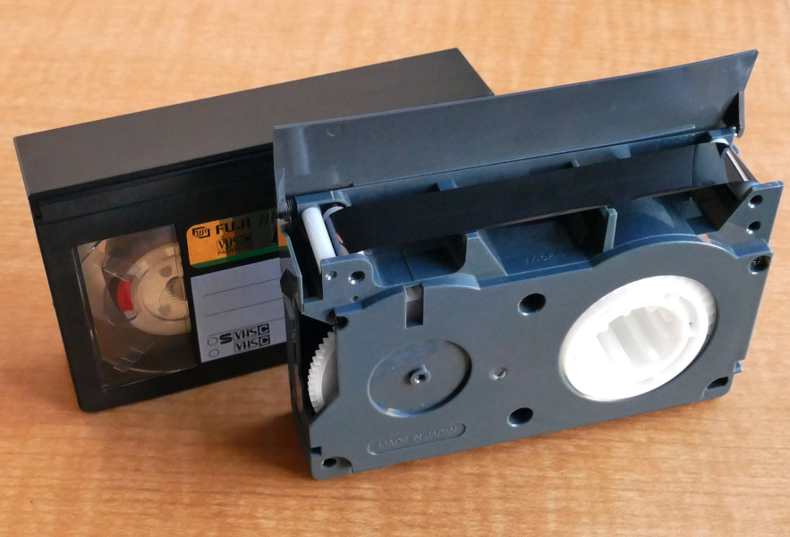

Serviço de conversão e recuperação de dados em São Carlos, SP.
Recuperação de arquivos que foram acidentalmente apagados, mídia formatada ou corrompida.
Os preços variam dependendo da quantidade de dados e da dificuldade de recuperação. Os valores abaixo são uma estimativa.
|  | Pen drive | Mensagem | |
|  | Cartão SD ou micro SD | Mensagem | |
| |
HD Externo | Mensagem | |
| HDD (hard disk) | Mensagem | ||
|  | SSD | Mensagem |
Consulte descontos para converter acima de 2 unidades.
|  | Fita cassete de áudio | Mensagem | |
| CD (áudio ou dados) | Mensagem | ||
| Vinil | Mensagem | ||
|  | VHS e outras mídias | sob consulta | Mensagem |
Raphael Silva, engenheiro de computação, mestre em Ciência da Computação e cientista de dados.
Perfil no Linkedin: https://www.linkedin.com/in/raphael-da-silva/.